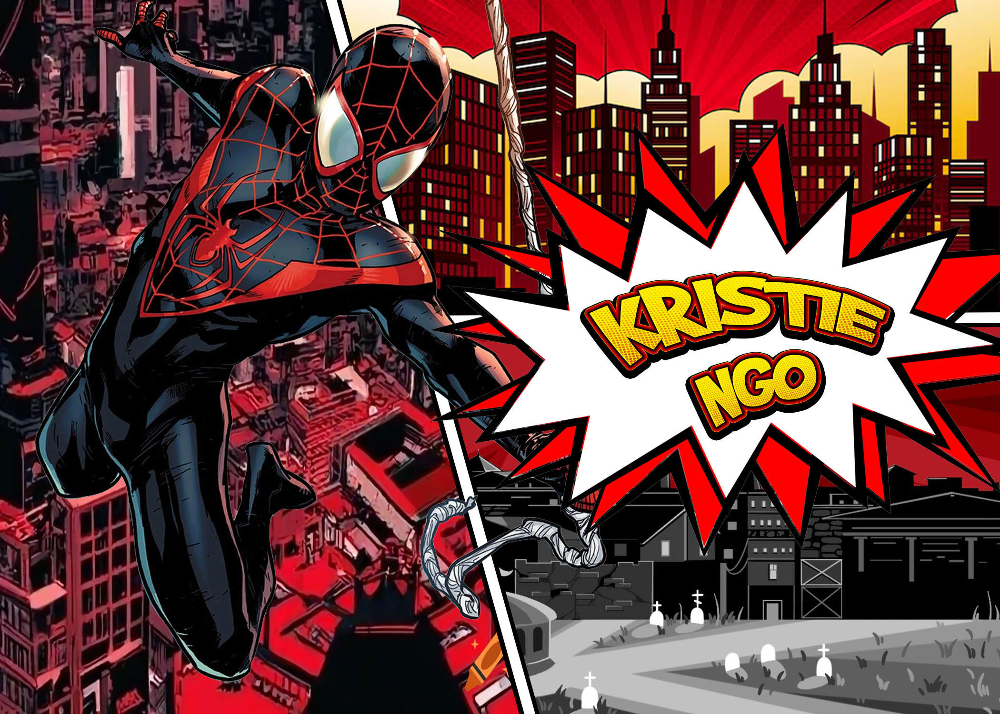
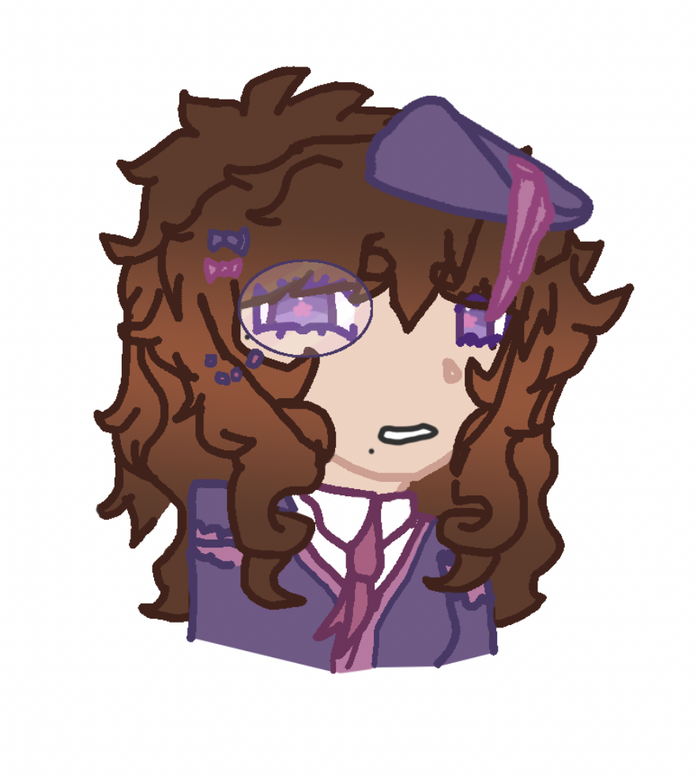
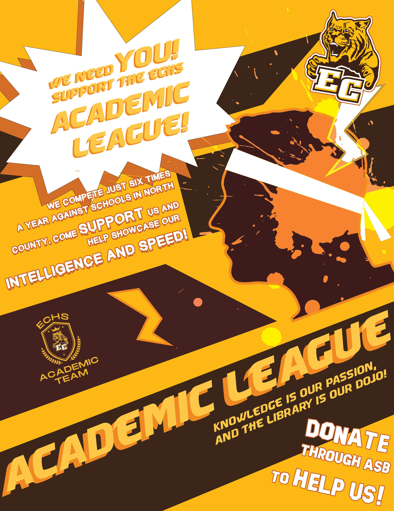

Meet the Designer
Hello! My name is Kristie Ngo, a student at El Camino high school! I'm someone quite involved with creativity, learning more and more everyday to combine my interests in artistry with technology. No matter the method, I love seeing all of the ways people use to express themselves. I've known it ever since I was a kid, whether it's through storytelling, visuals, sculptures, I'll be sure to decipher it! I always wanted to find a deeper way to dig into that outlet. So, why not do it on my own?
I'm someone who is currently pursuing both graphic and web design. I've had experienced making logos in the past, along with fliers to support my school community. Although I'm only a student, I'm sure I'll improve as time goes on. I'm someone who's very involved with community, especially my school community! I'm in multiple clubs designated to volunteering and helping out. Now, it's my turn to show you how I can help out!


How the Spark Came to a Flame
I remember sitting down in front of the television as a kid, watching the animated shows dance across the screen. I was always so entertained, so curious how they were capable of composing a simple drawing into a sequence of actions. It came to the point where I had frowned watching childrens shows that had actual actors, I wanted the bright colors and exaggerated features back. I wanted to watch the visuals only a human could make, displaying extreme expressions beyond comprehension.
I continued to only be more frustrated as I always failed to create art projects in elementary school. I would follow the instructions fine, but I would always mess up somewhere to the point where the project wasn't akin to the others. However, it's not elementary anymore. I pursue graphic design in order to display the expressiveness that I always wanted. Combining the fields of creativity and technology was a perfect fit for me! Designing and creating visuals is always an amazing outlet, and following this path only allows me to help others too.
How the Flame Rose Into a Star
Once I pursued graphic design, I knew I couldn't stop there. Graphic design was fun and an amazing outlet! It was intriguing to discover the methods to create a desired result, regardless if it was simply adjusting a photo or not. I always came back to looking at my works on my portfolio, knowing that I held some sort of pride for it. It was something that I made, regardless of digital or reality.
My interests only pushed me to pursue more. With such hands-on activities, I knew I had to pursue web design. I'm always grateful that I have this opportunity to uncover more and more about my own interests. I was always curious about the more coded parts on the internet, pursuing engineer and technological classes in the past. Now, I am currently taking it and learning more and more to produce something that I'm proud of. It's not something to stop and stare at, but rather interact with!
The Path
Currently, I am learning how to utilize HTML and CSS and how to apply it to proper sites on GitHub. With the way this is being viewed, you can clearly see how I'm utilizing that skill now! I've learned how to write paragraphs with bold, underlined, and italicized text! I even know how to embed youtube videos and images as displayed on this page! You also must've seen my skill of using links too as you navigated here. I'm experienced in using Photoshop, Adobe Illustrator, and more. This is displayed with my works above too.
Now, I plan to utilize my skills for an entrepeneur business of my own. I aim to have a business on the side that produces promotional works and artworks for clients! As time goes on, I am constantly improving and learning how to code and advance my skills. Hopefully I can utilize this website to create something that's fun and interactive for you! I may only be a student, but I'm sure I can produce something that you all are pleased with in the future.